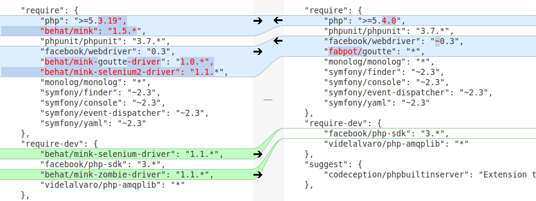

Codeception
because tests can have frameworks too
Luka Mužinić
@lmuzinic
@trikoder
@netakademija
My first experience with testing

Testing 101
Why use a testing framework
You probably use framework when coding (unless you are Rasmus :))
so it is only logical to use it while writing tests
How to test a testing framework?
What is Codeception?
PHPUnit on steroids
Readable tests, BDD style
Describes actions from user's perspective
Integrates with most frameworks
Written in PHP on top of proven packages
Codeception 1.8
"require": {
"php": ">=5.3.19",
"behat/mink": "1.5.*",
"phpunit/phpunit": "3.7.*",
"facebook/webdriver": "0.3",
"behat/mink-goutte-driver": "1.0.*",
"behat/mink-selenium2-driver": "1.1.*",
"monolog/monolog": "*",
"symfony/finder": "~2.3",
"symfony/console": "~2.3",
"symfony/event-dispatcher": "~2.3",
"symfony/yaml": "~2.3"
}Quick start
~ wget http://codeception.com/codecept.phar /usr/local/bin/codeception~ codeception bootstrapUnit tests in action
~ codeception generate:phpunit unit XitiTranslate~ codeception generate:test unit XitiTranslateUnit tests in action
class XitiTranslateTest extends \Codeception\TestCase\Test {
protected $codeGuy;
protected $xitiTranslate = null;
protected function _before() {
$this->xitiTranslate = new XitiTranslate($data);
}
protected function _after() {
unset($this->xitiTranslate);
}
public function testXitiTranslations() {
$this->assertEquals('Hofer KG', $this->xitiTranslate->companyName());
$this->assertEquals(2, $this->xitiTranslate->companyId());
// ...Functional tests in action
~ codeception generate:cept functional MobileApiIndustriesFunctional tests in action
<?php
$I = new TestGuy($scenario);
$I->wantTo('test MobileApp API to return all necessary fields for industries');
$I->haveHttpHeader('Fetch-Type', 'full');
$I->haveHttpHeader('Api-Version', '2');
$I->sendGET('/industries');
$I->seeResponseCodeIs(200);
$I->seeResponseIsJson();
$I->seeResponseContains('{industries:[...]}');Acceptance tests in action
~ codeception generate:cept acceptance HeaderNavigationCategoriesAcceptance tests in action
<?php
$I = new WebGuy($scenario);
$I->wantTo('see that categories are in navigation');
$I->amOnPage('/');
$I->click("Branchen & Themen", "nav.main_nav_entities");
$I->click("Alle Kategorien");
$I->see("Bauen & Garten",".nav_panel .drop");
$I->see("Sport & Fitness",".nav_panel .drop");Run all the tests!
~ codeception run
Modules
AMPQ, Db, Memcache, Cli, Filesystem
Symfony, Zend, Yii, Laravel, Kohana
Codecption 2.0 is near
beta actually
Changes in 2.0

Alternatives
What now?
Thx!
Questions?
Bai!
Please rate my talk